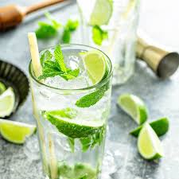

The Real Mojito

A mojito is a classic highball drink that originated in Cuba. Not surprisingly, this cocktail uses
ingredients indigenous to Cuba, including rum, lime, mint, and sugar.
The mixture is topped off with a little club soda to create a thirst-quenching libation.
It requires a bit more labor than many mixed drinks, as it involves first muddling fresh mint,
lime, and sugar together to release the flavors.
Ingredients
- 10 fresh mint leaves.
- ½ medium lime, cut into 3 wedges, divided.
- 2 tablespoons white sugar, or to taste.
- 1 cup ice cubes, or as needed.
- 1 ½ fluid ounces white rum.
- ½ cup club soda, or as needed.
Steps
-
Place mint leaves and 1 lime wedge into a sturdy glass. Use a muddler and crush to release mint oils and lime juice.
-
Add remaining lime wedges and 2 tablespoons sugar, and muddle again to release the lime juice. Do not strain the mixture.
-
Fill the glass almost to the top with ice. Pour in rum and fill the glass with club soda.
-
Stir, taste, and add more sugar if desired.
Back to main page